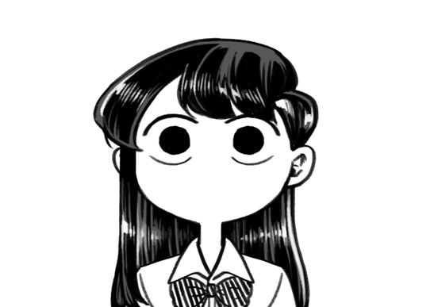

Latihan HTML Abim
Dikelas ini kita akan mencoba mengubah warna background
Daftar pelajaran X TJA 7
Dasar Design Grafis
Dasar Pemrograman
Dasprog
DDG
Pertama, kita mencoba memasukkan gambar

Lalu, mari kita menambahkan video